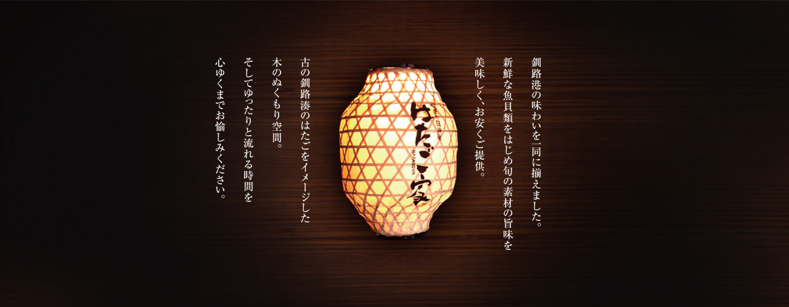
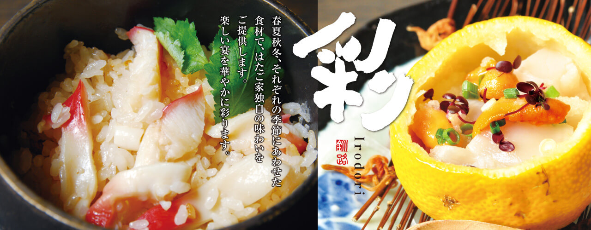
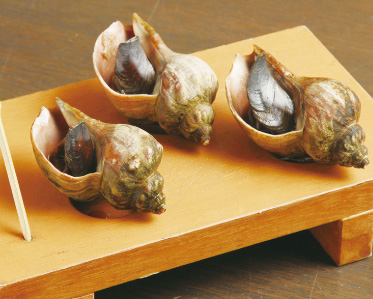

Photo Gallery
炉端の番屋とは
釧路和商市場のほど近くに店を構える炉端焼き居酒屋「炉端の番屋」。釧路の炉端焼き文化は全国的にも有名で、その中でも特に地元民から愛される名店です。店主自ら毎朝釧路港で仕入れる新鮮な魚介を炭火で丁寧に焼き上げるスタイルが評判を呼んでいます。
実食レビュー
炭火で丁寧に焼いた釧路産ホッケは、身がふっくらとして脂のりが抜群。地元産の日本酒「福司」との組み合わせは格別で、ついつい杯が進みます。タコの刺身は鮮度そのものでコリコリとした食感が忘れられません。
メニューと価格
📎 公式Webサイト
現在、独立した公式Webサイトは確認できていません。最新情報はお電話または各グルメサイトでご確認ください。
アクセス・予約
訪問のコツ
📞 予約は必須！
当日飛び込みは断られることがほとんど。必ず事前に電話予約を。人気のため週末は2〜3週前からの予約が安全。
- 旬の食材は「今日のおすすめ」を必ず聞くべし。季節によって最高の食材が変わる。
- 地元の日本酒「福司」は釧路限定のため必ず注文を。ぬる燗が特におすすめ。
- 和商市場と組み合わせて観光するのがおすすめ。市場でランチ、夜は番屋でプランが定番。